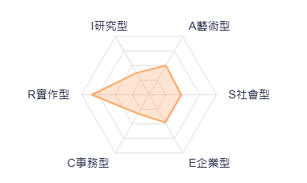

專注於技術實作與系統維護的未來 MIS 工程師

這種「技術紮實、思考靈活」的組合，使我在面對複雜的網路架構與系統排錯時，既能按部就班執行，也能彈性調整方案。
負責電腦系統、伺服器及相關周邊設備的安裝與維護。管理企業內部網路系統（如防火牆、交換器），並處理資安事件及員工技術支援。
根據我的何倫碼測驗結果，我具備高度的「實作 (R)」特質，這反映在我對硬體組裝與網路除錯的熱忱上。我喜歡將複雜的系統梳理得井然有序，這正是一個 MIS 網管人員的核心價值。同時，我的「藝術 (A)」特質讓我具備獨立作業的能力，在面對突發的系統故障時，我能冷靜分析並找出創新的解決路徑。
目前有修習「資料庫管理」的課程，。同時準備考取Oracle Database SQL Certified Associate證照，強化實務背景。
目前參加了靜宜大學的行雲者-主機維護研究小組，目前專案為整理學校機房，增加對機架式伺服器結構、網路架構等事物的認識。